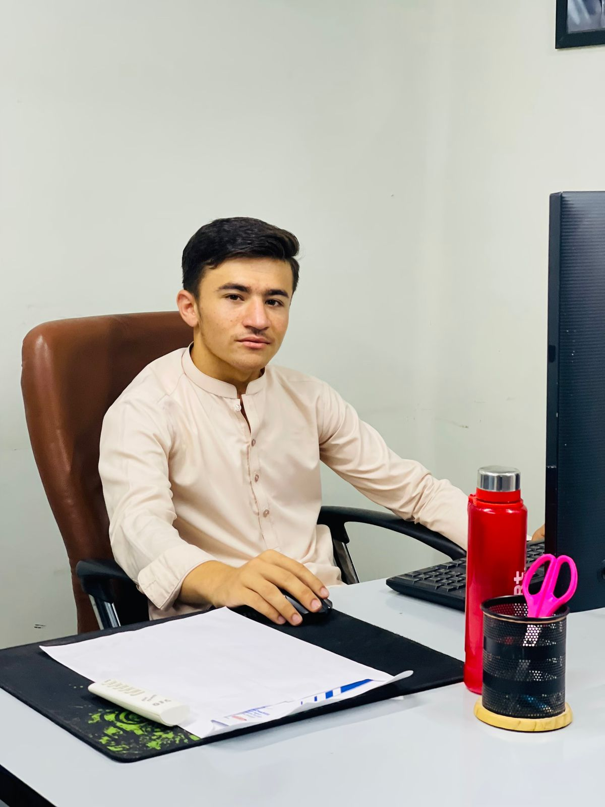

01 — ABOUT ME
Turning AI concepts into working projects.
A practical AI learner focused on building useful systems, not just studying theory.
I’m M Arshad, an Artificial Intelligence student and aspiring AI developer with a strong interest in building intelligent, practical, and real-world solutions. My journey in AI has focused on developing a solid foundation in Machine Learning, Deep Learning, Computer Vision, and modern AI technologies, while continuously improving my ability to turn concepts into working applications.
I have worked on a variety of AI and machine learning projects involving predictive modeling, neural networks, image classification, object detection, natural language processing, sequence modeling, attention mechanisms, and Transformer-based architectures. Through these projects, I have gained practical experience in developing, training, evaluating, and deploying AI models.
My current focus is on Computer Vision and applied AI, particularly intelligent systems that can interact with and understand the real world. I’m also exploring AI deployment, robotics, UAV/drone technologies, and AI-powered infrastructure inspection, with the goal of combining software intelligence with real-world systems.
I believe that learning AI goes beyond understanding algorithms—it is about solving meaningful problems, building useful applications, and continuously experimenting with new technologies. I’m passionate about learning, developing innovative solutions, and growing toward a professional career in Artificial Intelligence, Computer Vision, Robotics, and intelligent autonomous systems.

LANGUAGES